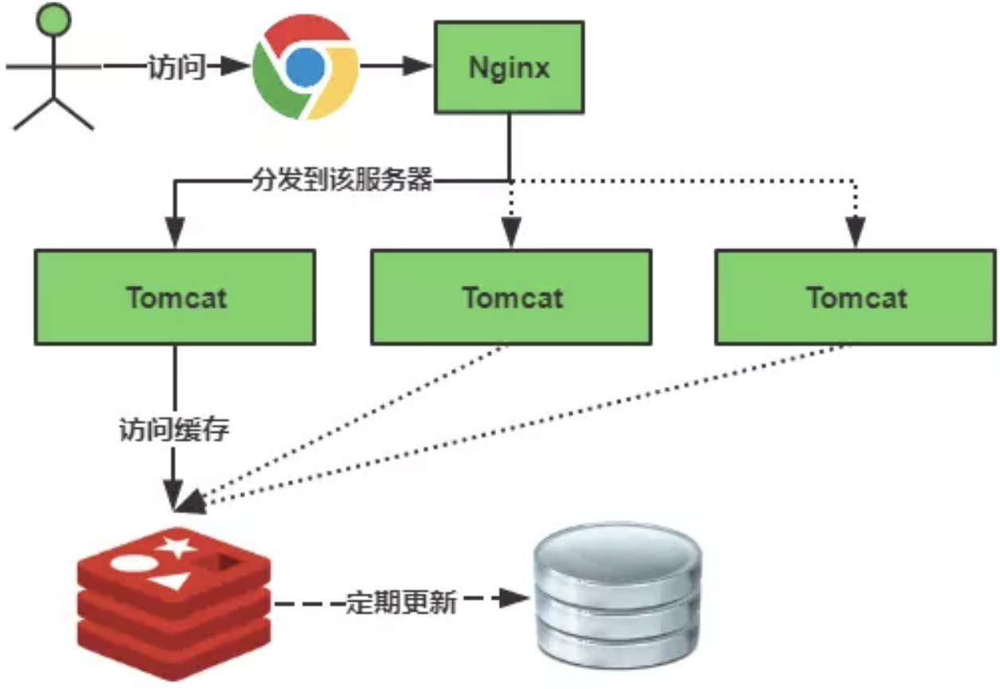
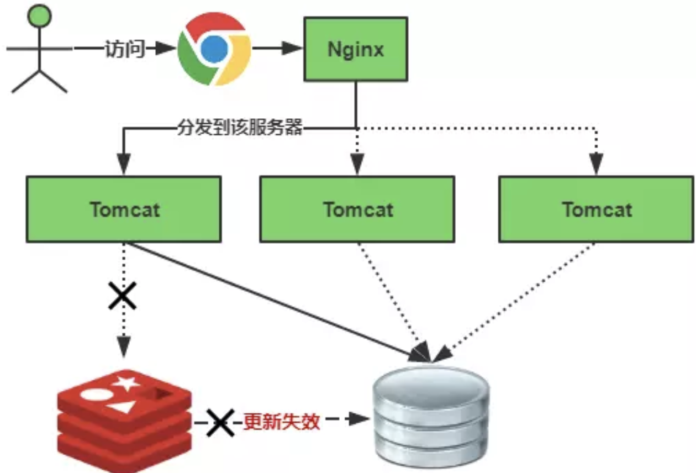
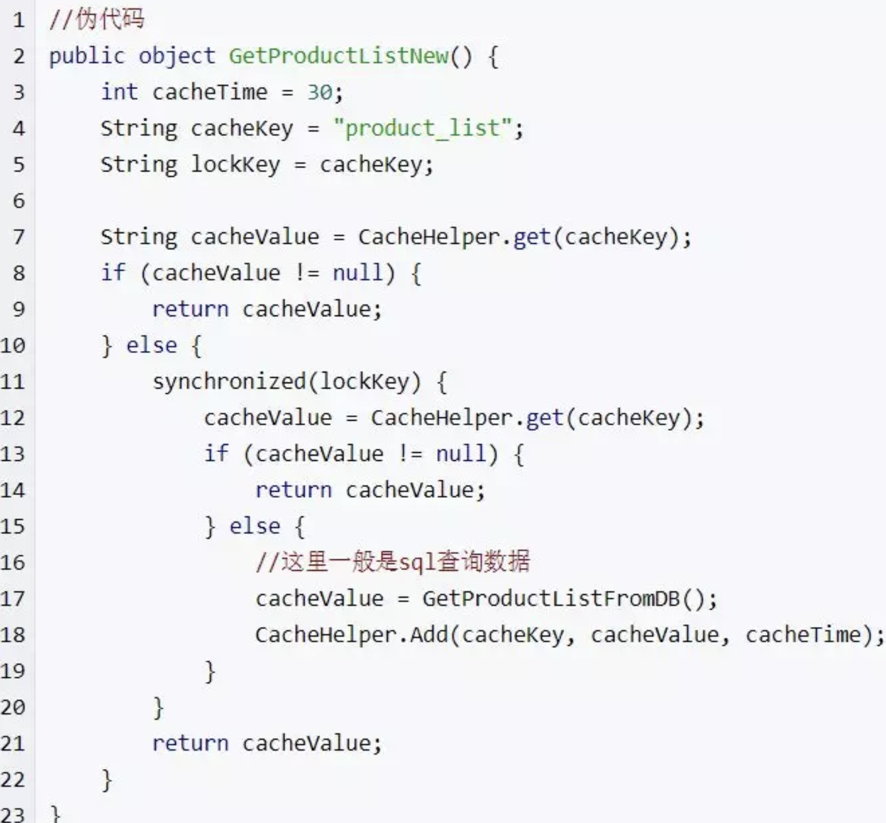
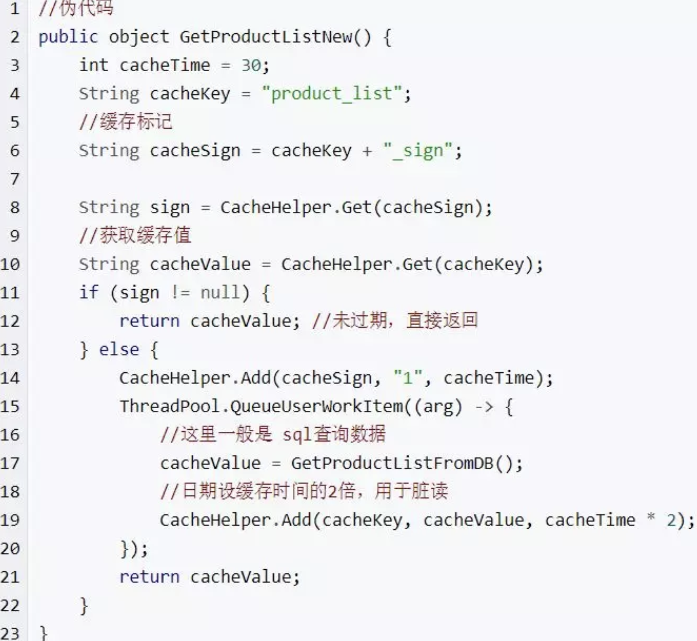
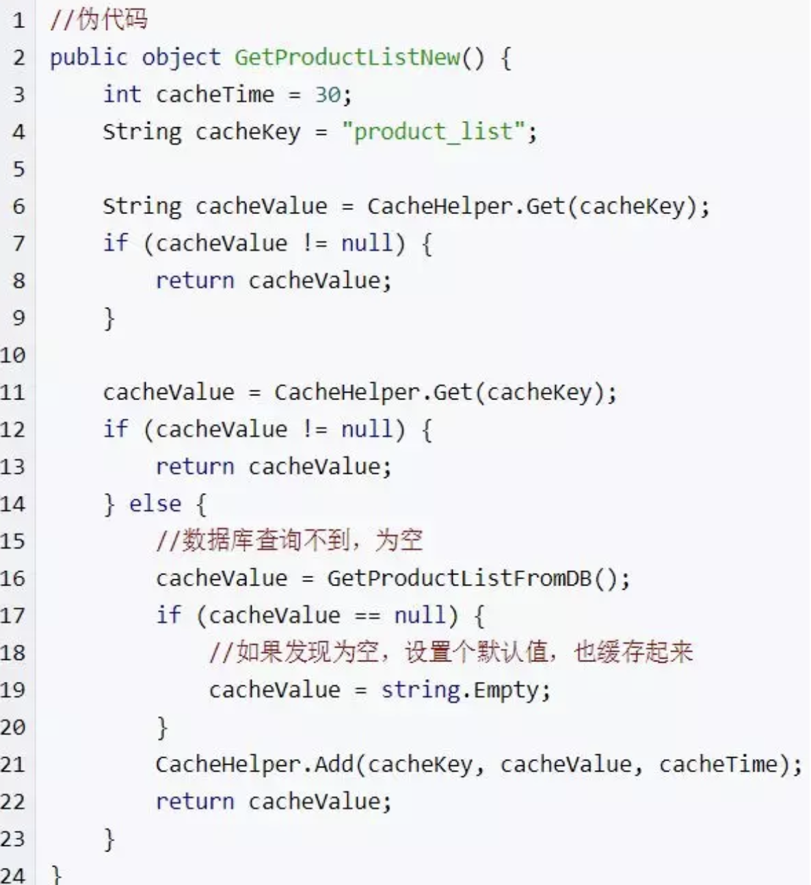

Redis 缓存雪崩、缓存穿透、缓存预热、缓存更新、缓存降级等概念的入门及简单解决方案
缓存雪崩
缓存雪崩我们可以简单的理解为：由于原有缓存失效，新缓存未到期间(例如：我们设置缓存时采用了相同的过期时间，在同一时刻出现大面积的缓存过期)，所有原本应该访问缓存的请求都去查询数据库了，而对数据库CPU和内存造成巨大压力，严重的会造成数据库宕机。从而形成一系列连锁反应，造成整个系统崩溃。
缓存正常从Redis中获取，示意图如下：

缓存失效瞬间示意图如下：

缓存失效时的雪崩效应对底层系统的冲击非常可怕！大多数系统设计者考虑用加锁或者队列的方式保证来保证不会有大量的线程对数据库一次性进行读写，从而避免失效时大量的并发请求落到底层存储系统上。还有一个简单方案就时讲缓存失效时间分散开，比如我们可以在原有的失效时间基础上增加一个随机值，比如1-5分钟随机，这样每一个缓存的过期时间的重复率就会降低，就很难引发集体失效的事件。
以下简单介绍两种实现方式的伪代码：
（1）碰到这种情况，一般并发量不是特别多的时候，使用最多的解决方案是加锁排队，伪代码如下：

加锁排队只是为了减轻数据库的压力，并没有提高系统吞吐量。假设在高并发下，缓存重建期间key是锁着的，这是过来1000个请求999个都在阻塞的。同样会导致用户等待超时，这是个治标不治本的方法！
注意：加锁排队的解决方式分布式环境的并发问题，有可能还要解决分布式锁的问题；线程还会被阻塞，用户体验很差！因此，在真正的高并发场景下很少使用！
（2）还有一个解决办法解决方案是：给每一个缓存数据增加相应的缓存标记，记录缓存的是否失效，如果缓存标记失效，则更新数据缓存，实例伪代码如下：

解释说明：
1、缓存标记：记录缓存数据是否过期，如果过期会触发通知另外的线程在后台去更新实际key的缓存；
2、缓存数据：它的过期时间比缓存标记的时间延长1倍，例：标记缓存时间30分钟，数据缓存设置为60分钟。 这样，当缓存标记key过期后，实际缓存还能把旧数据返回给调用端，直到另外的线程在后台更新完成后，才会返回新缓存。
关于缓存崩溃的解决方法，这里提出了三种方案：使用锁或队列、设置过期标志更新缓存、为key设置不同的缓存失效时间，还有一各被称为“二级缓存”的解决方法，有兴趣的读者可以自行研究。
缓存穿透
缓存穿透是指用户查询数据，在数据库没有，自然在缓存中也不会有。这样就导致用户查询的时候，在缓存中找不到，每次都要去数据库再查询一遍，然后返回空（相当于进行了两次无用的查询）。这样请求就绕过缓存直接查数据库，这也是经常提的缓存命中率问题。
有很多种方法可以有效地解决缓存穿透问题，最常见的则是采用布隆过滤器，将所有可能存在的数据哈希到一个足够大的bitmap中，一个一定不存在的数据会被这个bitmap拦截掉，从而避免了对底层存储系统的查询压力。
另外也有一个更为简单粗暴的方法，如果一个查询返回的数据为空（不管是数据不存在，还是系统故障），我们仍然把这个空结果进行缓存，但它的过期时间会很短，最长不超过五分钟。通过这个直接设置的默认值存放到缓存，这样第二次到缓冲中获取就有值了，而不会继续访问数据库，这种办法最简单粗暴！

把空结果，也给缓存起来，这样下次同样的请求就可以直接返回空了，即可以避免当查询的值为空时引起的缓存穿透。同时也可以单独设置个缓存区域存储空值，对要查询的key进行预先校验，然后再放行给后面的正常缓存处理逻辑。
缓存预热
缓存预热这个应该是一个比较常见的概念，相信很多小伙伴都应该可以很容易的理解，缓存预热就是系统上线后，将相关的缓存数据直接加载到缓存系统。这样就可以避免在用户请求的时候，先查询数据库，然后再将数据缓存的问题！用户直接查询事先被预热的缓存数据！
解决思路：
1、直接写个缓存刷新页面，上线时手工操作下；
2、数据量不大，可以在项目启动的时候自动进行加载；
3、定时刷新缓存；
缓存更新
除了缓存服务器自带的缓存失效策略之外（Redis默认的有6中策略可供选择），我们还可以根据具体的业务需求进行自定义的缓存淘汰，常见的策略有两种：
（1）定时去清理过期的缓存；
（2）当有用户请求过来时，再判断这个请求所用到的缓存是否过期，过期的话就去底层系统得到新数据并更新缓存。
两者各有优劣，第一种的缺点是维护大量缓存的key是比较麻烦的，第二种的缺点就是每次用户请求过来都要判断缓存失效，逻辑相对比较复杂！具体用哪种方案，大家可以根据自己的应用场景来权衡。
五、缓存降级
当访问量剧增、服务出现问题（如响应时间慢或不响应）或非核心服务影响到核心流程的性能时，仍然需要保证服务还是可用的，即使是有损服务。系统可以根据一些关键数据进行自动降级，也可以配置开关实现人工降级。
降级的最终目的是保证核心服务可用，即使是有损的。而且有些服务是无法降级的（如加入购物车、结算）。
在进行降级之前要对系统进行梳理，看看系统是不是可以丢卒保帅；从而梳理出哪些必须誓死保护，哪些可降级；比如可以参考日志级别设置预案：
（1）一般：比如有些服务偶尔因为网络抖动或者服务正在上线而超时，可以自动降级；
（2）警告：有些服务在一段时间内成功率有波动（如在95~100%之间），可以自动降级或人工降级，并发送告警；
（3）错误：比如可用率低于90%，或者数据库连接池被打爆了，或者访问量突然猛增到系统能承受的最大阀值，此时可以根据情况自动降级或者人工降级；
（4）严重错误：比如因为特殊原因数据错误了，此时需要紧急人工降级。
总结
这些都是实际项目中，可能碰到的一些问题，也是面试的时候经常会被问到的知识点，实际上还有很多很多各种各样的问题，文中的解决方案，也不可能满足所有的场景，相对来说只是对该问题的入门解决方法。一般正式的业务场景往往要复杂的多，应用场景不同，方法和解决方案也不同，由于上述方案，考虑的问题并不是很全面，因此并不适用于正式的项目开发，但是可以作为概念理解入门，具体解决方案要根据实际情况来确定